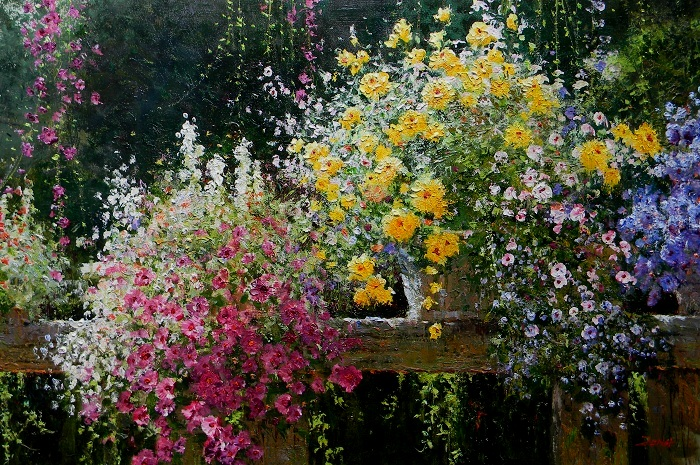
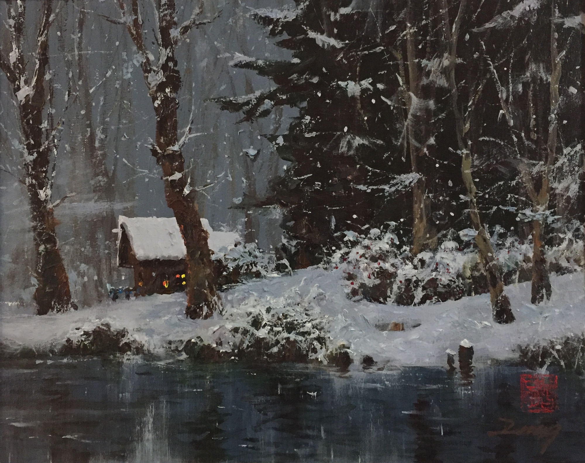

Founder
Peach Blossom Spring, by Uncle Zeng
Uncle Zeng is a master of drawing, watercolor, acrylic painting, oil painting and architecture. His paintings had been shown in museums and galleries in many different countries. Two of his paintings are in the permanent collection of the National Gallery of China.
Summer Garden in Toronto, by Uncle Zeng
In the 1980s and 1990s, Uncle Zeng had many one-man shows in many famous universities such as Massachusetts Institute of Technology in the U. S. A. and Simon Fraser University in Canada.
Snow in the Rockies, by Uncle Zeng
Uncle Zeng immigrated to Canada in 1989 as an internationally well-known artist.
Wind and Rain Bridge, by Uncle Zeng
Uncle Zeng's paintings had been exhibited in the following places:
- National Gallery of China in 1984
- Royal Museum of Thailand in 1985
- National Museum of Brazil in 1986
- Museum of Massachusetts Institute of Technology in 1987
- Pennsylvania University in the U. S. A. in 1988
- City Hall of Hanover, Germany in 1988
- Galleries in San Francisco, California, U. S. A. in 1988
- Galleries in Carmel, California, U. S. A. in 1988
- Galleries in La Jolla, California, U. S. A. in 1988
- Galleries in Australia in 1988
- Galleries in New Zealand in 1989
- Gallery in Seattle, Washington, U. S. A. in 1989
- Galleries in Hawaii, U. S. A. in 1990
- Galleries in Toronto, Canada in 1991
- Gallery in Ottawa, Canada in 1991
- Gallery in Calgary, Canada in 1994
- Gallery in Victoria, Canada in 1995
- Simon Fraser University in Canada in 1996
Returning Home, by Uncle Zeng
Uncle Zeng strongly believes that drawing can help preserve our creative thinking abilities, so he founded the Canadian and American Drawing Artists Association (CAADAA) before his retirement. He hopes that the CAADAA can continue to encourage young artists in both countries to achieve excellence in drawing.
Bamboo and Cranes, by Uncle Zeng
Uncle Zeng is from a very famous artistic and educational family in China. The Zeng family has donated many teaching books and materials to schools and libraries.
Golden Autumn, by Uncle Zeng
Uncle Zeng had given free guidance and suggestions to many young artists for more than 45 years in China, the United States, and Canada.
Bamboo Village, by Uncle Zeng
If you would like to learn more about Uncle Zeng and his artwork, please visit www.unclezeng.com.